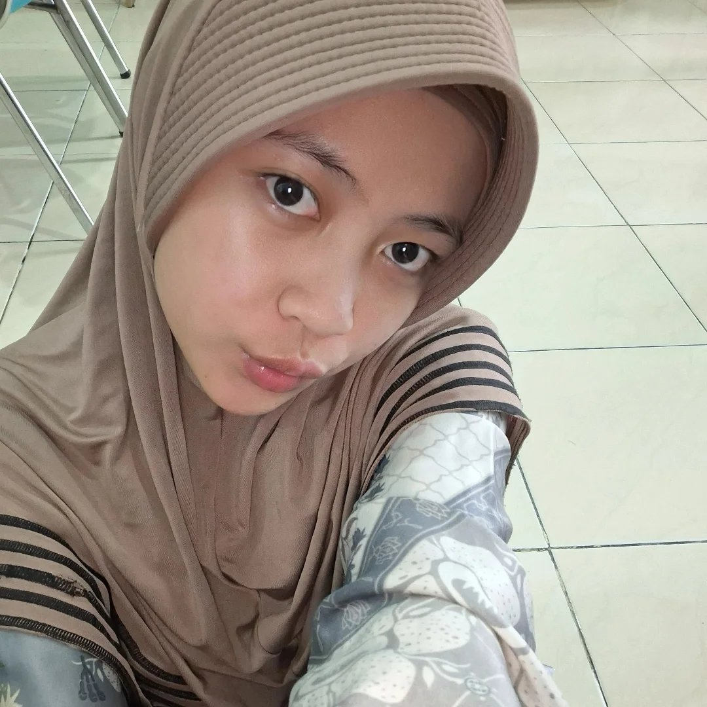

Manja, sensitif, tapi tetap layak dicintai seutuhnya
Dewi Sinta itu unik. Dia bisa tersenyum cerah di pagi hari, lalu tiba-tiba ngambek tanpa alasan yang jelas di sore hari.
Dia tipe orang yang gampang tersinggung — bahkan kata “kamu baik” kadang bisa disalahartikan. Perasaannya sedalam samudra, dan seringkala cengeng kalau nonton
film sedih atau dimarahi sedikit.
Kalau lagi kesal, hobinya ngaduuuuan ke sahabat atau keluarganya. Mood-nya bisa berubah drastis dalam hitungan menit: dari ceria jadi melamung, dari semangat jadi pengen dipeluk.
Tapi justru di situlah pesonanya. Dia nggak pernah berpura-pura jadi orang lain. Dia minta dimengerti meskipun kadang sulit, dan dia tahu bahwa tak semua orang harus memahaminya. Seperti kata hatinya:
“Ga semua orang harus dimengerti, Dew.” — kalimat yang jadi tameng lembutnya.
Sifat yang bikin deg-degan
Ngambek ga jelas
Gampang ke singgung dibawa ke hati
Cengeng (air mata gampang tumpah)
Suka ngaduan (biar lega)
Mood berubah kayak cuaca April
Tapi di balik itu, hatinya paling lembut
“Aku mungkin susah ditebak, tapi yang aku butuh cuma kamu yang tetap bertahan. Ga semua orang harus dimengerti, Dew — tapi kamu, tolong jangan pergi.”
“DIEM DIEM LU ITU NGELIATIN AKU ?”
“AKU MAH GA PERNAH NGELIATIN KAMU · GA USAH KE PEDEAN”
✨ klik untuk balasan nakal ✨
AKU PENGEN KETEMU SAMA IBU KAMU LAGI · BOLEH GA? 🥺
✨ klik untuk jawaban manis ✨

Memahami Dewi Sinta itu perjalanan — terkadang berliku, tapi selalu indah. Selamat ulang tahun untukmu yang paling apa adanya. #DewiSintaAsli